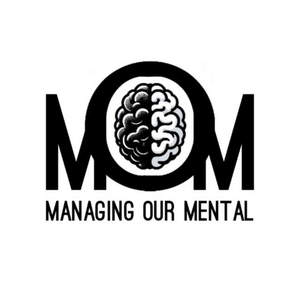

Trade Mark Journal No.2025/014 4 April 2025
UK00004175013 17 March 2025 (25,35,36,41,44)

- Class 25
- Clothing; Ready-to-wear clothing; Bottoms [clothing]; Sports clothing; Athletic clothing; Tops [clothing]; Men's clothing.
- Class 35
- Development of business organization strategies relating to corporate social responsibility; Providing assistance in the field of business management and planning; Management on behalf of industrial and commercial enterprises in terms of supplying them with office requisites; Serving as a human resources department for others; Management assistance for promoting business; Providing assistance in the management of business activities; Human resources management and recruitment services; Office management services [for others]; Staff utilisation planning; Retail services connected with the sale of clothing and clothing accessories.
- Class 36
- Personal financial planning services; Financial services relating to wealth management; Personal financial planning.
- Class 41
- Education services relating to the development of childrens' mental faculties; Education services relating to physical fitness; Educational services relating to physical fitness; Provision of health club [physical exercise] facilities; Providing of training in the field of health care and nutrition; Physical health education; Physical fitness education services; Training of non-medical staff in the care of children; Conducting training sessions on physical fitness online; Training services in the field of medical disorders and their treatment; Health club services [exercise]; Training services relating to health and safety; Physical education services; Health club services [health and fitness training]; Training services relating to occupational health; Physical fitness training services; Physical training services.
- Class 44
- Providing mental health rehabilitation facilities; Mental health services; Personality assessment services [mental health services]; Mental health screening services; Health care services for assisting individuals to stop smoking; Managed health care services; Health care services offered through a network of health care providers on a contract basis; Health care in the nature of health maintenance organizations; Advisory services relating to health care; Professional consultancy relating to health; Providing health information; Providing information in the field of health via a website; Information services relating to health care; Psychological counseling of staff; Psychological care; Health care relating to relaxation therapy; Providing psychological treatment.
Managing Our Mental CIC